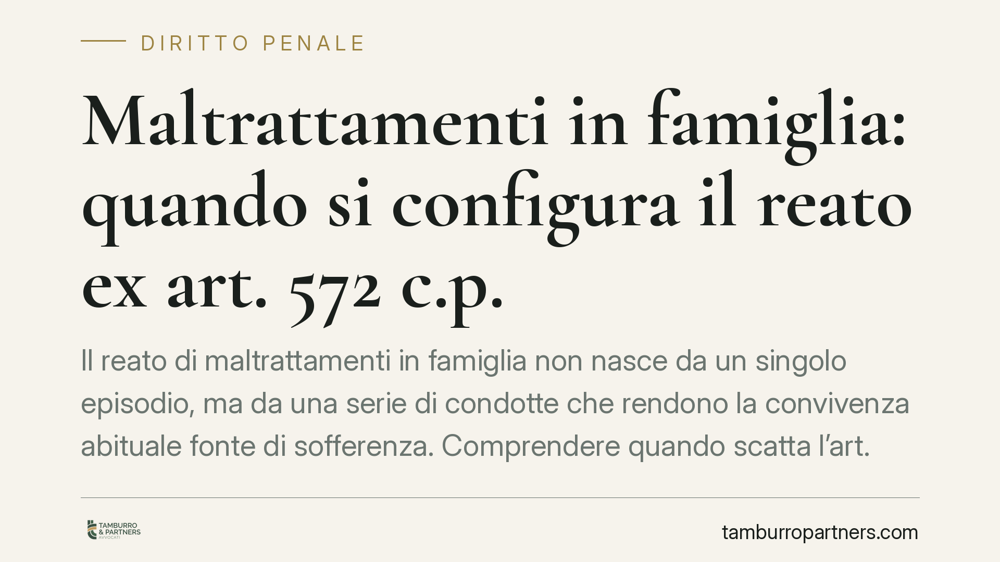

Maltrattamenti in famiglia: quando si configura il reato ex art. 572 c.p.
Il reato di maltrattamenti in famiglia non nasce da un singolo episodio, ma da una serie di condotte che rendono la convivenza abituale fonte di sofferenza. Comprendere quando scatta l'art. 572 c.p., quali soggetti tutela e come si valutano le prove è essenziale sia per chi subisce sia per chi si trova indagato.

Inquadramento normativo
L'art. 572 del codice penale punisce chi maltratta una persona della famiglia o comunque convivente, oppure una persona sottoposta alla sua autorità o affidata per ragioni di educazione, cura, vigilanza o custodia, o per l'esercizio di una professione.
La cornice edittale è stata inasprita da interventi successivi, in particolare dalla legge 19 luglio 2019, n. 69 (c.d. Codice Rosso) e dal decreto-legge 10 ottobre 2023, n. 123, convertito con modificazioni dalla legge 24 novembre 2023, n. 168. Per la formulazione vigente e le pene applicabili occorre sempre verificare il testo aggiornato dell'art. 572 c.p., poiché la disciplina è stata oggetto di modifiche ravvicinate.
Il secondo comma dell'art. 572 c.p. prevede aggravanti specifiche, tra cui il fatto commesso in presenza o in danno di persona minore, di donna in stato di gravidanza o di persona con disabilità, nonché con armi. Sono inoltre previste circostanze aggravate quando dal fatto derivano lesioni personali, gravi o gravissime, o la morte della vittima.
Il requisito dell'abitualità
Il tratto distintivo del reato è l'abitualità. Non basta un episodio isolato di violenza o di offesa: occorre una pluralità di condotte, fisiche o psicologiche, che nel loro insieme creino un sistema di vita fondato su sopraffazione, umiliazione e sofferenza.
Questo elemento consente di distinguere i maltrattamenti da altre figure di reato. Le percosse (art. 581 c.p.) e le lesioni (art. 582 c.p.) puniscono l'aggressione fisica in sé; la minaccia (art. 612 c.p.) tutela la libertà morale; gli atti persecutori o stalking (art. 612-bis c.p.) presuppongono in genere l'assenza di un rapporto di convivenza attuale. I maltrattamenti, invece, presuppongono un legame stabile e una condotta reiterata nel tempo.
La convivenza more uxorio
La tutela dell'art. 572 c.p. non si esaurisce nel matrimonio. Secondo un orientamento consolidato della Corte di Cassazione, la norma si applica anche alla convivenza di fatto, quando tra le parti esista una relazione stabile e continuativa, con condivisione di vita e reciproci obblighi di assistenza morale e materiale (convivenza more uxorio).
Determinante non è quindi il vincolo formale, ma l'esistenza di un rapporto familiare o parafamiliare stabile. La cessazione della convivenza non fa venir meno la rilevanza penale delle condotte pregresse, quando queste abbiano avuto luogo durante il rapporto.
Il valore delle dichiarazioni della persona offesa
Nei procedimenti per maltrattamenti le dichiarazioni della vittima assumono spesso un rilievo centrale, perché i fatti si consumano in ambito domestico, lontano da testimoni.
Ciò non comporta alcun automatismo tra denuncia e condanna. La giurisprudenza richiede che le dichiarazioni siano vagliate con particolare rigore quanto ad attendibilità intrinseca (coerenza, costanza, assenza di contraddizioni) ed estrinseca. Quando la persona offesa è anche parte civile, la valutazione deve essere ancora più attenta. Restano fermi l'onere della prova a carico dell'accusa e il principio di presunzione di innocenza.
Implicazioni pratiche
Per chi subisce condotte abusive, comprendere la nozione di abitualità aiuta a inquadrare correttamente la propria situazione e a raccogliere elementi utili nel tempo, non solo in occasione dell'episodio più grave.
Per chi si trova indagato, la qualificazione del fatto richiede una valutazione tecnica caso per caso: occorre distinguere tra conflittualità reciproca, episodi isolati e una condotta effettivamente sistematica. La corretta qualificazione incide in modo rilevante sulla pena e sull'applicazione delle aggravanti.
Cosa fare in concreto
- Documentate gli episodi. Annotate date, luoghi e circostanze; conservate messaggi, referti medici e ogni elemento utile a ricostruire la continuità delle condotte.
- Valutate le misure di protezione. In presenza di pericolo attuale possono rilevare l'ordine di protezione civile (artt. 342-bis e 342-ter c.c.) e le misure cautelari penali, come l'allontanamento dalla casa familiare.
- Rivolgetevi tempestivamente ai presidi territoriali. Forze dell'ordine, pronto soccorso e centri antiviolenza possono attivare i primi interventi e formalizzare la documentazione.
- Verificate la qualificazione giuridica del fatto. La distinzione tra maltrattamenti, lesioni, minaccia e atti persecutori richiede un esame tecnico degli elementi concreti.
- Conservate la documentazione in modo ordinato. Un quadro cronologico chiaro agevola la valutazione probatoria, tanto in accusa quanto in difesa.
Disclaimer
Contributo informativo a cura di Tamburro & Partners Avvocati - Avv. Giuseppe Tamburro. Non costituisce parere legale.
Ogni condominio ha una storia a sé.
Se gestisci un'amministrazione e vuoi un confronto su una specifica questione condominiale, scrivi allo studio. Ti rispondiamo entro un giorno lavorativo.